Barbas & Bigotes · 9 de septiembre de 2026
Auditoría visual medida con instrumentos sobre 30 pantallas en producción (59 medidas: celular 390 px y escritorio 1280 px o tablet 1024 px, con sesiones reales de admin, mostrador y barbero). Se midió lo que hace que una interfaz se sienta pulida o no: cuántos tamaños de letra conviven, cuántos colores de texto, cuántos estilos de botón, radios, contraste, tamaño de los controles y cuánto ocupa la cabecera antes del contenido.
La app funciona y está bien resuelta por dentro; lo que la hace sentir "sin pulir" es que cada pantalla toma sus propias decisiones visuales: en el panel admin conviven 21 tamaños de letra, 32 estilos de botón y 8 radios de esquina; la cabecera cambia de forma según la sección y se come entre 230 y 368 px del celular antes de que aparezca el contenido; el rojo de la marca hace cinco trabajos a la vez (marca, plata, botón, enlace, filtro activo) y los íconos son emoji que cada teléfono dibuja distinto. Nada de esto se arregla pantalla por pantalla: se arregla definiendo una vez las piezas y haciendo que todas las pantallas las usen. Eso es esta propuesta.
Alcance, como pediste: el admin primero, después el mostrador, y del sitio público solo las desviaciones (en celular el sitio y el portal siguen 1:1 el prototipo de Claude Design, que es la regla del dueño). Se suma un capítulo nuevo: los exportes, que hoy son un CSV pelado y pueden ser un informe con la marca.
Según la sección, la cabecera cambia de composición: en Hoy, Clientes y Métricas el selector de sede va junto al logo; en Caja, Equipo, Horarios y Marketing el logo va solo, el selector baja a una segunda fila con la leyenda "Esta sección muestra las dos sedes" y la búsqueda a una tercera; en Agenda el avatar se cae a una fila propia porque no cabe. Resultado: el primer título aparece a 230 px (Hoy), 250 (Agenda), 307 (Caja) y 368 px (Equipo, Horarios, Cupones, Avisos, Tarjeta) en un celular de 844. En escritorio la cabecera son 178–259 px, también alta para un panel de trabajo.
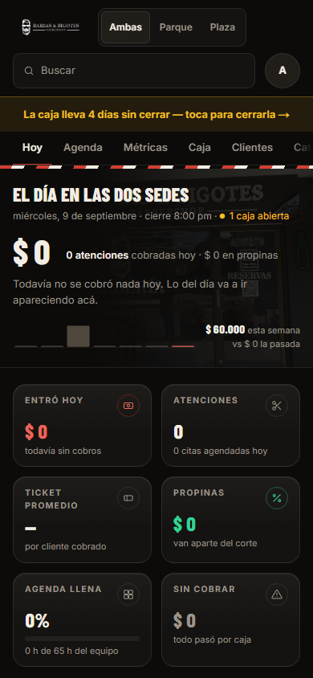
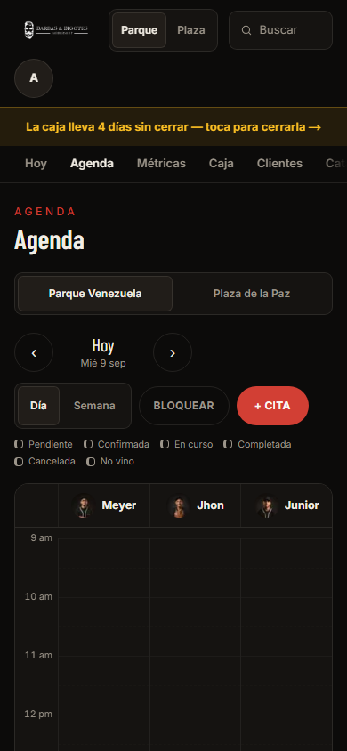
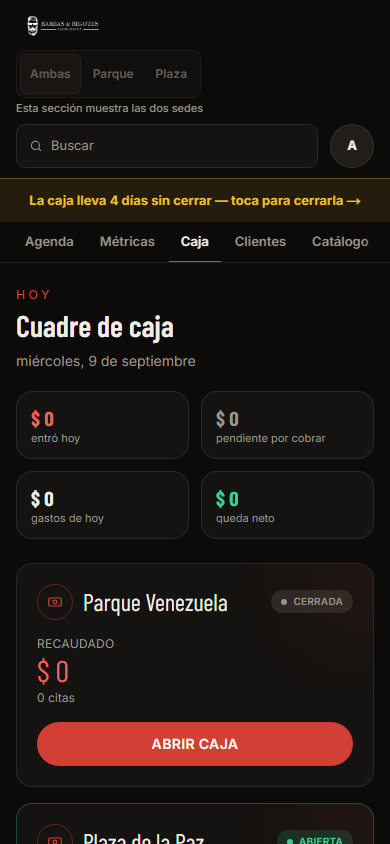
En el admin en celular aparecen 21 tamaños de letra distintos (9,5 · 10 · 10,5 · 11 · 11,5 · 12 · 12,5 · 13 · 13,5 · 14 · 14,5 · 15 · 16 · 17 · 18 · 19 · 20 · 24 · 26 · 30 · 42). Una pantalla sola llega a 15 (Caja) y 14 (Hoy). El texto por debajo de 12 px es el 38–46 % en Hoy, Agenda, Liquidación y Servicios: son los eyebrows de 10–11,5 px y los textos de apoyo. Y el eyebrow rojo de 12 px sobre el fondo oscuro mide 4,21:1 de contraste (AA pide 4,5): aparece en todas las secciones ("Agenda", "Hoy", "Base de datos", "Catálogo", "Acceso").
Contando combinaciones de fondo, color, borde, radio, alto y tipografía, el admin en celular tiene 32 estilos de botón; Equipo tiene 11 entre 40 botones, Caja 11 entre 32, Avisos 11 entre 21. Y conviven en el mismo grupo sin jerarquía: en Agenda, el segmentado Día/Semana, "Bloquear" con contorno y "+ Cita" sólido; en Servicios, "Suma sello" en pill roja, "Desactivar" en contorno y "+ Descripción" como enlace rojo. Los radios son 8 distintos (redondo total, 0, 4, 6, 8, 9, 12 y 16).
Es el color de la marca, del botón primario, de los eyebrows, de los filtros activos ("Cortes 7", "Todos"), de los enlaces de acción ("+ Descripción") y de la plata: "$ 0 entró hoy" en rojo lee como un problema, el neto en verde como un logro, los precios de Reservar en rojo como una alerta. Cuando todo es rojo, el rojo deja de señalar. La deuda ya estaba anotada el 14 de agosto; sigue viva.
En celular quedan controles bajo 40 px: Horarios 34 (las casillas de 13 px y los "Abrimos / Cerramos" de 32), Servicios 22 ("Suma sello" y "Desactivar" a 31 px, repetidos por servicio), Caja 17 (chips de categoría de gasto a 38), Equipo 17 ("Cambiar PIN" a 36 y una "×" de 8×18 px que agregué yo anoche en Google Calendar), Clientes 5 (filtros a 34), Cupones 3 (tipo de cupón a 34). El logo de la cabecera (94×32) cuenta en todas.
Productos y stock usa 30 emoji como íconos, Servicios 11, Comisiones 6, Reservar 6. Un emoji cambia de forma entre Android, iPhone y Windows, no se puede colorear con la marca y no alinea con el texto. El repo ya tiene un set de íconos SVG de trazo (Plus, ArrowRight, Star, Check…): falta usarlo en todos lados.
Eyebrow + título + párrafo explicativo (+ tres KPI decorativos + segundo párrafo en Servicios): en Servicios y precios el primer servicio aparece a ~720 px; en Liquidación, Métricas y Cupones el patrón se repite. El texto ayuda la primera vez y estorba la número cincuenta. Y el 41 % del texto de Liquidación está bajo 12 px.
Mostrador (390 px): las tarjetas de barbero truncan el nombre a "M..", "J.." porque la tarjeta reparte 2 columnas con avatar, nombre, estado y el botón "+"; en tablet se ven bien. La barra inferior mezcla pestañas de solo texto con tres estilos de botón (Cobrar contorno rojo, + Cliente sólido, + Cita contorno). Público: la Home móvil tiene 23 tamaños de letra, dos CTA rojos visibles a la vez y el widget de contacto encima del título de la siguiente sección; Barberos tiene 17 textos bajo AA; Reservar sigue mostrando la foto de archivo de un robot en "Cerquillos" y los precios en rojo.
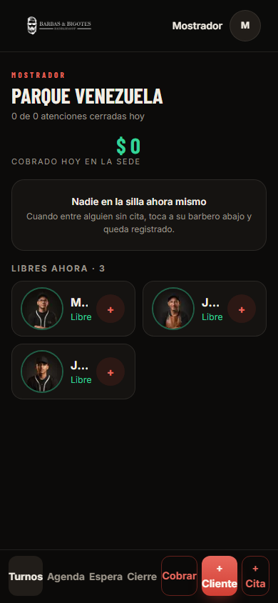
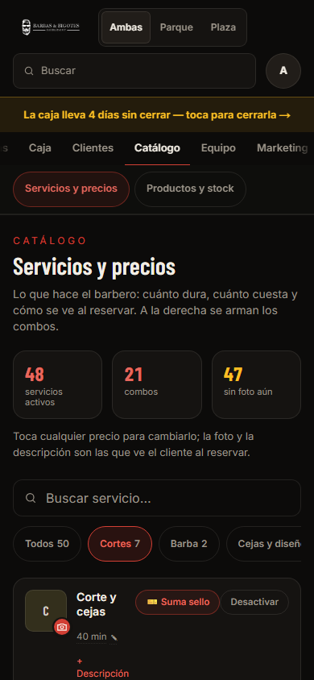
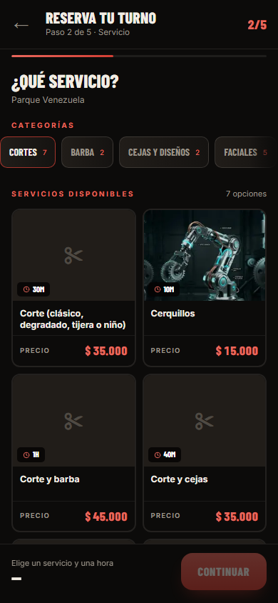
La identidad (fondo oscuro cálido, Barlow Condensed para títulos, Inter para leer, el rojo y la franja de barbería) es sólida y reconocible: no hay que cambiarla, hay que administrarla. El patrón de dos paneles del escritorio (lo que se mira a la izquierda, lo que se hace fijo a la derecha) funciona. Hoy en escritorio ya casi está. El mostrador es limpio y con estados vacíos que hablan claro. Las tarjetas de Productos, rediseñadas el 6 de septiembre, son el modelo: 0 % de texto chico, un solo Switch, controles a 44 px.
Nada nuevo que aprender: los mismos tokens de globals.css, la misma tipografía, el mismo rojo. Lo que cambia es que se decide una vez y se aplica en todos lados. Ocho reglas, ilustradas abajo con los colores y fuentes reales:
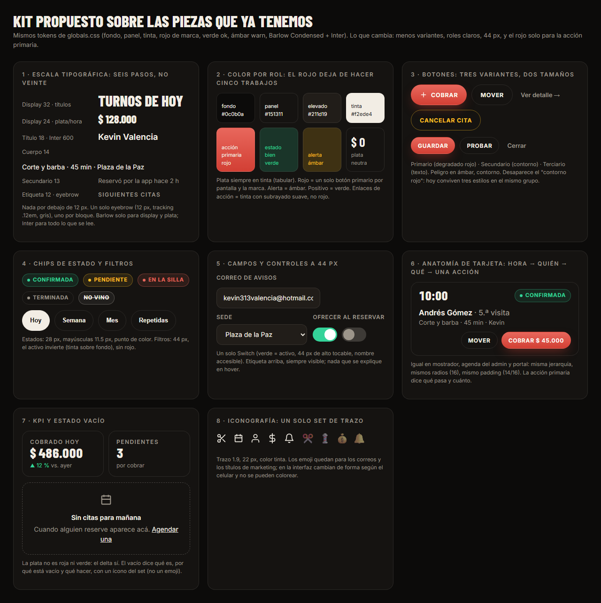
Display 32 (títulos) · Display 24 (plata y horas) · Título 18 · Cuerpo 14 · Secundario 13 · Etiqueta 12. Nada por debajo de 12. Un solo eyebrow: 12 px, gris, tracking .12em, uno por bloque. Barlow solo para display y plata; Inter para lo que se lee.
Rojo = la marca y un botón primario por pantalla. Plata siempre en tinta, con números tabulares; el signo (▲ ▼) lleva el color, no el monto. Verde = estado positivo. Ámbar = alerta. Enlaces de acción en tinta con subrayado suave. Filtro activo = tinta invertida, no rojo.
Primario (degradado rojo), Secundario (contorno), Terciario (texto). Peligro en ámbar con contorno. 44 px de alto (36 en tarjetas densas). Desaparece el contorno rojo. Componente único Boton con variante y tamaño: los 32 estilos se vuelven 6.
Estado: 28 px, mayúsculas 11,5, punto de color (verde confirmada, ámbar pendiente, rojo suave en la silla, gris terminada, tachado no vino). Filtros: 44 px, el activo invierte. Sub-pestañas de sección (Servicios/Productos, Barberos/Liquidación/Comisiones, Cupones/Tarjeta/Avisos) pasan a este segmentado dentro del contenido, no en la cabecera.
Etiqueta arriba, siempre visible; nada que se explique en hover. Un solo Switch (verde = activo, ya existe: Switch.tsx) para todo Sí/No: Suma sello, Ofrecer al reservar, Abre/Cerrado, avisos.
Hora → quién → qué → una acción. Radio 16, padding 14/16, borde line, fondo panel. La misma en mostrador, agenda del admin, clientes y portal. La acción primaria dice qué pasa y cuánto ("Cobrar $ 45.000").
KPI: etiqueta 12 arriba, número Display 28 en tinta, delta con color abajo. Vacío: ícono del set + qué es + por qué está vacío + qué hacer (un enlace). Fuera los sparklines sin datos.
Trazo 1,9, 22 px, color tinta (el set SVG del repo, ampliado). Los emoji quedan para los correos y el marketing. Categorías de servicio con ícono propio (tijera, navaja, cejas, facial, capilar, depilación, combo) en vez de la foto de archivo.
Fila 1 (56 px): marca compacta · selector de sede como chip desplegable "Ambas sedes ▾" · lupa · avatar. Fila 2 (44 px): pestañas con desplazamiento. El aviso de caja pasa a una tarjeta ámbar de 40 px dentro del contenido, solo en Hoy y Caja. Desaparecen la leyenda "Esta sección muestra las dos sedes" (el selector se oculta donde no aplica) y las sub-pestañas de la cabecera. El contenido empieza a ~150 px en celular, en todas las secciones por igual.
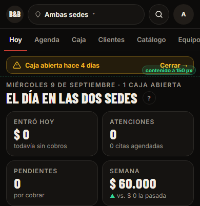
Eyebrow gris + título Display 28 + un botón "?" que abre la explicación (la primera vez se muestra abierta). Los KPI decorativos de Servicios (48 · 21 · 47) y el segundo párrafo se van; lo que informa pasa a la lista (contador junto al filtro).
"Para hacer" primero (es lo accionable), luego KPI en dos filas de dos, luego equipo y caja. Plata en tinta. El héroe con foto se queda en escritorio; en celular baja a una franja de 72 px con fecha y estado de caja. Sin sparkline cuando no hay datos.
Un solo selector de sede (el de la cabecera). Grupo de acciones con jerarquía: Día/Semana segmentado · "Bloquear" secundario · "+ Cita" primario. Leyenda de estados como chips de 28 px en una fila con desplazamiento. Columnas por barbero con foto 32 y nombre 13.
KPI en tinta; tarjeta de sede con chip de estado (abierta/cerrada) y un solo primario ("Abrir caja" o "Cerrar caja"). Chips de categoría de gasto a 44. Formularios con la anatomía de campo del kit. Cobro exprés de pendientes en tarjeta de cita.
Filtros a 44 y activo invertido. Fila → tarjeta: avatar con inicial, nombre 16, chip de sede, última visita, gasto en tinta. "Registrar cliente" como secundario junto al buscador (hoy es un primario rojo enorme antes del buscador).
Una sola sección con segmentado Servicios / Productos. Tarjeta de servicio con ícono de categoría o foto real, duración y precio por sede tocables, "Suma sello" y "Activo" como Switch (44 px). Sin KPI decorativos. La foto del robot sale hoy mismo: hasta que el dueño suba fotos, ícono de categoría.
Una tarjeta por barbero que reúne lo que hoy está en tres listas: PIN, correo de avisos (con Probar/Guardar) y agenda de Google, con foto y sede. Ausencias siguen fijas a la derecha. Horarios: filas de 44 con Switch Abre/Cerrado y selectores de hora grandes; las casillas de 13 px desaparecen. La foto de la sede y su dirección viven acá una sola vez.
Segmentado dentro del contenido. Formulario de cupón con campos de 44 px, tipo de cupón como segmentado de 44, primario a ancho completo. Los toggles de Avisos y "Te toca corte" con el Switch único.
Números en tinta con delta coloreado; filtros de período a 44; fuera los emoji de Comisiones. La tarjeta por barbero de Liquidación se queda (está bien) con "A pagar" en tinta y grande. Los botones "Excel" pasan a "Informe" con las dos salidas (Excel con marca y PDF), ver capítulo 5.
Se mantiene; hereda cabecera y tipografía del kit.
Hoy "↓ Excel" en Clientes, Liquidación y Métricas descarga un CSV: sin logo, sin formato de plata, sin totales, y abierto en Excel a veces desordena los acentos. Para el contador, el socio o un banco eso se ve como un archivo interno, no como un informe de la barbería.
Archivo .xlsx real: encabezado con logo, nombre del informe, período y sede; tabla con cabecera en color de marca, columnas con ancho, plata en formato $ #.##0 (COP), fechas legibles, totales en negrita, encabezado congelado y filtros activados; una hoja por sede y una de resumen. Nombre de archivo claro ("Liquidación 7–13 sep · Barbas y Bigotes.xlsx"). Se genera en el servidor con exceljs (sin dependencias pesadas).
Tres informes con la identidad de los correos (franja de barbería, logo, Barlow para títulos, tablas limpias, pie con sedes y fecha de emisión): Liquidación semanal (una página por barbero: facturado, su parte, adelantos, consumos, a pagar, espacio de firma; más el resumen), Cierre de caja del día (esperado vs. contado por medio, gastos, adelantos, diferencia, quién cerró) y Resumen del mes (KPI, comparación con el mes anterior, top servicios, barberos, clientes nuevos vs. repetidos). Botón "Informe" junto a "Excel", y "Compartir" para mandarlo por WhatsApp al contador o al barbero. Generación en el servidor con @react-pdf/renderer (JS puro, corre en Vercel).
| Tanda | Qué | Días | Cómo se mide |
|---|---|---|---|
| 1 · Sistema | Componentes únicos (Boton, Chip, Eyebrow, SectionHeader v2, Switch), escala tipográfica, plata neutra, íconos SVG por categoría, cabecera del admin de dos filas. | 3 | Cromo ≤ 150 px en todas las secciones; botones ≤ 5 estilos por pantalla; texto < 12 px < 5 %; AA 0. |
| 2 · Pantallas del admin | Hoy, Agenda, Caja, Clientes, Catálogo, Equipo+Horarios, Marketing, Métricas/Liquidación/Comisiones con el kit. | 3 | Controles < 40 px = 0; una sola cabecera; sin emoji en la interfaz. |
| 3 · Exportes | Excel con marca (3) + informes PDF (Liquidación, Cierre, Mes). | 3 | El contador recibe el informe sin retocarlo. |
| 4 · Mostrador y público | Tarjetas de barbero sin truncar y a un toque; barra inferior con íconos y un solo primario; Home con un CTA por pantalla y widget cerrado; Barberos con contraste AA; Reservar sin foto de archivo y plata en tinta. | 2 | Cobrar una cita: 1 toque; Home < 3.500 px; AA 0 en Barberos. |
Total: 11 días. La tanda 1 se nota en todas las pantallas del admin el primer día que se despliega; propongo arrancar por ahí y mostrarte el antes/después medido. Al terminar, el proyecto de diseño del staff en Claude Design se sincroniza con las piezas finales (DesignSync incremental), para que el diseño y el código vuelvan a ser lo mismo.
Rangos entre las pantallas de cada área (mínimo–máximo). Tamaños de letra más usados en todo el sitio: 13 px, 12 px, 12.5 px, 11 px, 14 px, 10 px, 11.5 px, 10.5 px, 15 px, 14.5 px, 16 px, 18 px, 17 px, 19 px, 24 px, 13.5 px.
| Pantalla | Tamaños tipográficos | Colores de texto | Estilos de botón | Radios | Textos bajo AA | Controles < 40 px | Texto < 12 px | Cromo (px) |
|---|---|---|---|---|---|---|---|---|
| Celular | 3–23 | 3–11 | 1–10 | 1–5 | 32 | 50 | 21 % | 72–347 |
| Escritorio / tablet | 3–24 | 3–13 | 1–16 | 1–9 | 41 | 98 | 22 % | 92–375 |
| Pantalla | Tamaños tipográficos | Colores de texto | Estilos de botón | Radios | Textos bajo AA | Controles < 40 px | Texto < 12 px | Cromo (px) |
|---|---|---|---|---|---|---|---|---|
| Celular | 4–10 | 4–5 | 4–7 | 3–7 | 1 | 4 | 23 % | 0–118 |
| Escritorio / tablet | 4–10 | 4–5 | 4–7 | 3–7 | 1 | 0 | 24 % | 0–118 |
| Pantalla | Tamaños tipográficos | Colores de texto | Estilos de botón | Radios | Textos bajo AA | Controles < 40 px | Texto < 12 px | Cromo (px) |
|---|---|---|---|---|---|---|---|---|
| Celular | 9–9 | 5–5 | 4–4 | 5–5 | 0 | 1 | 8 % | 118–118 |
| Pantalla | Tamaños tipográficos | Colores de texto | Estilos de botón | Radios | Textos bajo AA | Controles < 40 px | Texto < 12 px | Cromo (px) |
|---|---|---|---|---|---|---|---|---|
| Celular | 7–14 | 5–7 | 4–11 | 5–8 | 52 | 111 | 21 % | 230–368 |
| Escritorio / tablet | 8–15 | 5–8 | 4–11 | 5–8 | 52 | 107 | 23 % | 178–259 |
| Área | Pantalla | Tamaño | Tam. letra | Colores texto | Fondos | Radios | Botones (estilos/total) | Bajo AA / medidos | < 40 px | < 12 px | Cromo | Emoji |
|---|---|---|---|---|---|---|---|---|---|---|---|---|
| publico | Barberos | escritorio | 14 | 8 | 5 | 5 | 5/10 | 18/84 | 12 | 42 % | 181 | |
| publico | Barberos | movil | 12 | 8 | 5 | 5 | 4/9 | 17/73 | 5 | 44 % | 157 | |
| publico | Eliminar cuenta | escritorio | 10 | 7 | 6 | 4 | 5/5 | 1/57 | 15 | 12 % | 186 | |
| publico | Eliminar cuenta | movil | 8 | 6 | 5 | 4 | 4/4 | 0/46 | 8 | 8 % | 166 | |
| publico | Home | escritorio | 24 | 13 | 10 | 9 | 16/19 | 14/129 | 21 | 15 % | 92 | 1 |
| publico | Home | movil | 23 | 11 | 10 | 5 | 10/12 | 10/105 | 10 | 13 % | 72 | 2 |
| publico | Login del equipo | escritorio | 3 | 3 | 0 | 1 | 1/1 | 0/8 | 1 | 12 % | 375 | |
| publico | Login del equipo | movil | 3 | 3 | 0 | 1 | 1/1 | 0/8 | 1 | 12 % | 347 | |
| publico | Mi cuenta (sin sesión) | escritorio | 11 | 8 | 8 | 3 | 7/7 | 2/47 | 14 | 22 % | 214 | |
| publico | Mi cuenta (sin sesión) | movil | 9 | 7 | 8 | 3 | 6/6 | 1/36 | 7 | 21 % | 194 | |
| publico | Nosotros | escritorio | 14 | 7 | 5 | 4 | 6/7 | 4/59 | 15 | 13 % | 181 | |
| publico | Nosotros | movil | 13 | 7 | 5 | 4 | 5/6 | 3/48 | 7 | 10 % | 157 | |
| publico | Privacidad | escritorio | 13 | 8 | 5 | 4 | 4/4 | 1/68 | 20 | 7 % | 186 | |
| publico | Privacidad | movil | 11 | 7 | 4 | 4 | 3/3 | 0/57 | 12 | 4 % | 150 | |
| publico | Reservar · sede | escritorio | 10 | 6 | 5 | 3 | 2/2 | 1/15 | 0 | 27 % | 108 | |
| publico | Reservar · sede | movil | 10 | 6 | 5 | 3 | 2/2 | 1/15 | 0 | 27 % | 100 | |
| publico | Reservar · servicio | escritorio | 15 | 6 | 6 | 5 | 3/14 | 0/55 | 0 | 43 % | 108 | 6 |
| publico | Reservar · servicio | movil | 15 | 6 | 6 | 5 | 3/14 | 0/55 | 0 | 43 % | 100 | 6 |
| mostrador | Agenda (calendario) | movil | 9 | 4 | 4 | 7 | 7/9 | 1/31 | 1 | 50 % | 0 | |
| mostrador | Agenda (calendario) | tablet | 9 | 5 | 4 | 7 | 7/9 | 1/31 | 0 | 51 % | 0 | |
| mostrador | Cierre | movil | 5 | 4 | 3 | 4 | 4/6 | 0/7 | 1 | 0 % | 0 | |
| mostrador | Cierre | tablet | 5 | 4 | 3 | 4 | 4/6 | 0/7 | 0 | 0 % | 0 | |
| mostrador | Lista de espera | movil | 4 | 4 | 2 | 3 | 4/5 | 0/6 | 1 | 0 % | 0 | |
| mostrador | Lista de espera | tablet | 4 | 4 | 2 | 3 | 4/5 | 0/6 | 0 | 0 % | 0 | |
| mostrador | Turnos | movil | 10 | 5 | 3 | 5 | 4/7 | 0/16 | 1 | 8 % | 118 | |
| mostrador | Turnos | tablet | 10 | 5 | 3 | 5 | 4/7 | 0/16 | 0 | 8 % | 118 | |
| barbero | Mi día (barbero) | movil | 9 | 5 | 3 | 5 | 4/7 | 0/15 | 1 | 8 % | 118 | |
| admin | Agenda día | escritorio | 10 | 6 | 4 | 6 | 8/10 | 2/40 | 1 | 40 % | 198 | |
| admin | Agenda día | movil | 8 | 5 | 4 | 6 | 8/10 | 2/37 | 1 | 40 % | 250 | |
| admin | Agenda semana | escritorio | 9 | 8 | 4 | 6 | 8/10 | 3/37 | 1 | 39 % | 198 | |
| admin | Agenda semana | movil | 7 | 7 | 4 | 6 | 8/10 | 3/34 | 1 | 38 % | 250 | |
| admin | Avisos | escritorio | 11 | 6 | 6 | 6 | 11/21 | 3/46 | 3 | 13 % | 259 | |
| admin | Avisos | movil | 10 | 6 | 6 | 6 | 11/21 | 3/44 | 3 | 11 % | 368 | |
| admin | Ayuda | escritorio | 10 | 5 | 4 | 5 | 4/4 | 1/65 | 2 | 12 % | 198 | |
| admin | Ayuda | movil | 9 | 5 | 4 | 5 | 4/4 | 1/63 | 2 | 11 % | 307 | |
| admin | Caja (cuadre) | escritorio | 15 | 7 | 6 | 7 | 11/32 | 9/91 | 17 | 23 % | 198 | |
| admin | Caja (cuadre) | movil | 14 | 7 | 6 | 7 | 11/32 | 9/89 | 17 | 22 % | 307 | |
| admin | Clientes | escritorio | 10 | 7 | 8 | 6 | 7/9 | 1/138 | 1 | 22 % | 198 | |
| admin | Clientes | movil | 8 | 7 | 8 | 5 | 7/9 | 1/129 | 5 | 19 % | 250 | |
| admin | Comisiones | escritorio | 11 | 5 | 3 | 5 | 6/8 | 1/47 | 1 | 32 % | 259 | 6 |
| admin | Comisiones | movil | 10 | 5 | 3 | 5 | 6/8 | 1/45 | 1 | 31 % | 368 | 6 |
| admin | Cupones | escritorio | 8 | 6 | 4 | 5 | 9/10 | 2/15 | 3 | 6 % | 259 | |
| admin | Cupones | movil | 7 | 6 | 4 | 5 | 9/10 | 2/13 | 3 | 3 % | 368 | |
| admin | Equipo | escritorio | 12 | 7 | 4 | 7 | 11/40 | 18/98 | 17 | 16 % | 259 | |
| admin | Equipo | movil | 12 | 7 | 4 | 7 | 11/40 | 18/96 | 17 | 15 % | 368 | |
| admin | Horarios | escritorio | 10 | 7 | 4 | 6 | 8/11 | 6/59 | 34 | 8 % | 259 | |
| admin | Horarios | movil | 9 | 7 | 4 | 6 | 8/11 | 6/57 | 34 | 7 % | 368 | |
| admin | Hoy | escritorio | 14 | 5 | 4 | 6 | 4/4 | 0/91 | 1 | 38 % | 178 | |
| admin | Hoy | movil | 13 | 5 | 4 | 6 | 4/4 | 0/89 | 1 | 38 % | 230 | |
| admin | Liquidación | escritorio | 10 | 6 | 3 | 6 | 8/11 | 1/105 | 1 | 41 % | 259 | |
| admin | Liquidación | movil | 10 | 6 | 3 | 6 | 8/11 | 1/103 | 1 | 41 % | 311 | |
| admin | Métricas | escritorio | 13 | 6 | 3 | 6 | 7/11 | 1/57 | 1 | 17 % | 198 | |
| admin | Métricas | movil | 12 | 6 | 3 | 6 | 7/11 | 1/55 | 1 | 16 % | 250 | |
| admin | Productos y stock | escritorio | 9 | 7 | 11 | 6 | 8/36 | 1/179 | 1 | 0 % | 259 | 30 |
| admin | Productos y stock | movil | 8 | 7 | 11 | 6 | 8/36 | 1/177 | 1 | 0 % | 311 | 30 |
| admin | Servicios y precios | escritorio | 12 | 6 | 9 | 8 | 10/28 | 1/105 | 22 | 46 % | 259 | 11 |
| admin | Servicios y precios | movil | 12 | 6 | 9 | 8 | 10/28 | 1/96 | 22 | 43 % | 311 | 11 |
| admin | Tarjeta de fidelidad | escritorio | 9 | 7 | 4 | 6 | 10/19 | 2/44 | 1 | 22 % | 259 | 1 |
| admin | Tarjeta de fidelidad | movil | 9 | 7 | 4 | 6 | 10/19 | 2/42 | 1 | 21 % | 368 | 1 |
Método: Playwright contra barbasybigotes.com, auditoria-visual.py. "Estilos de botón" = combinaciones distintas de fondo, color, borde, radio, alto y tipografía entre los botones visibles. El contraste se mide sobre el color de fondo efectivo; los colores en formato oklab (opacidades de Tailwind) no se miden y se cuentan aparte. "Cromo" = píxeles desde arriba hasta el primer título del contenido.
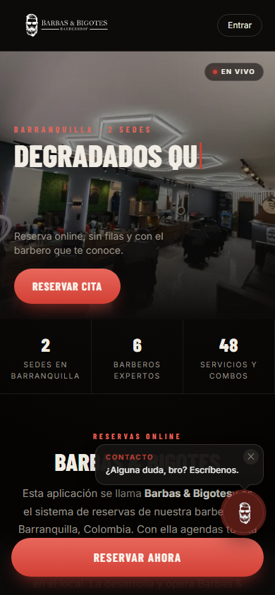
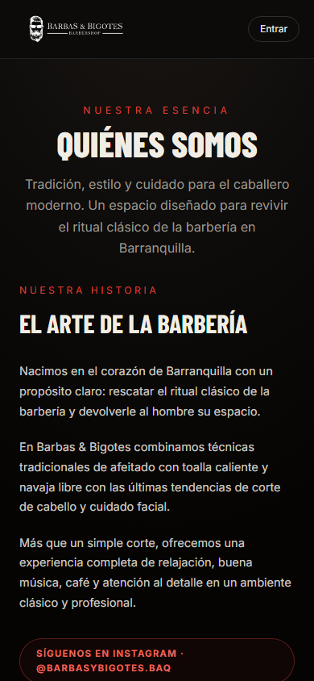
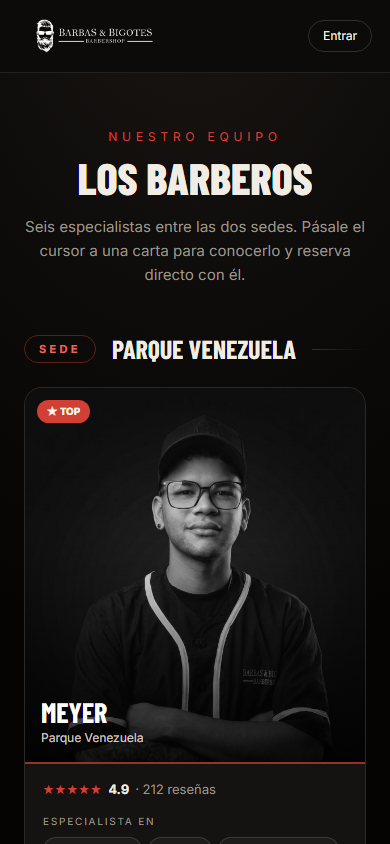
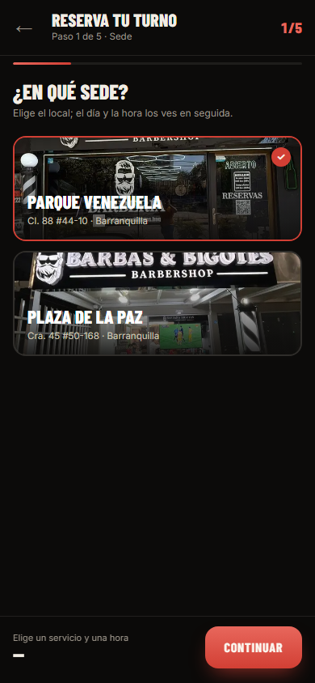
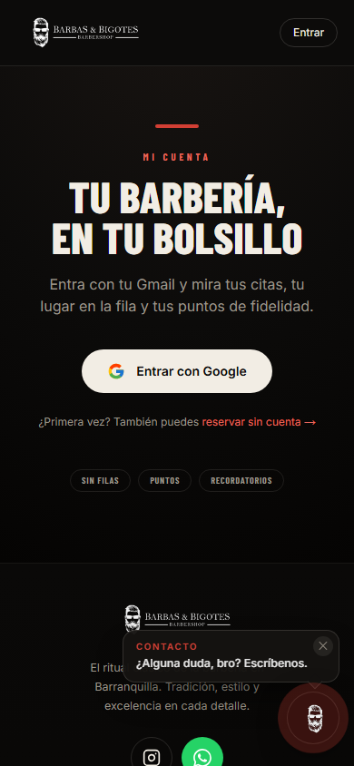
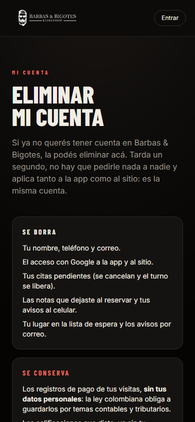
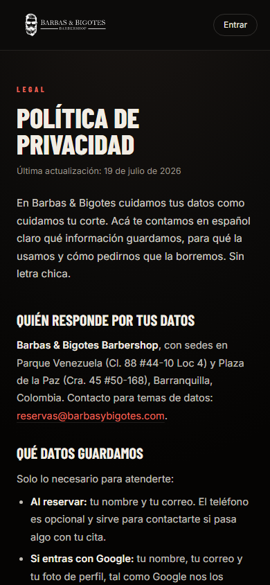
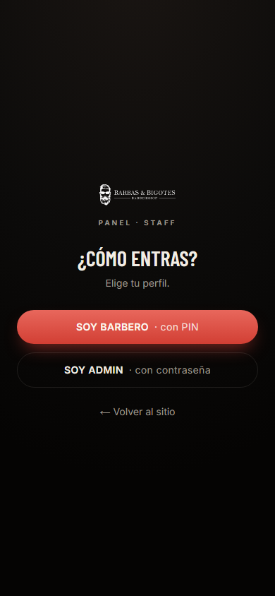
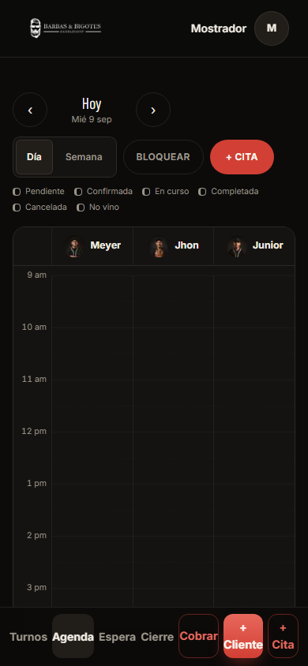
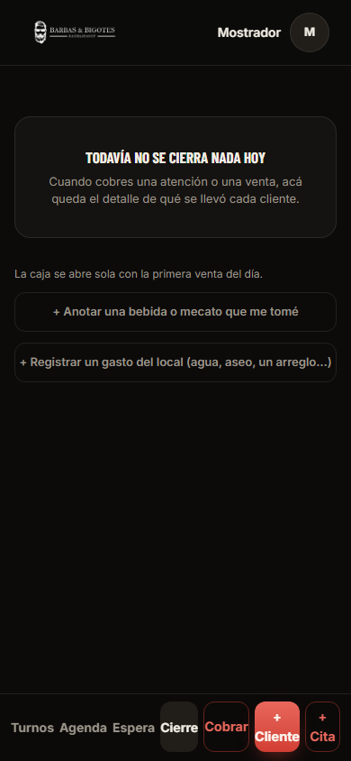
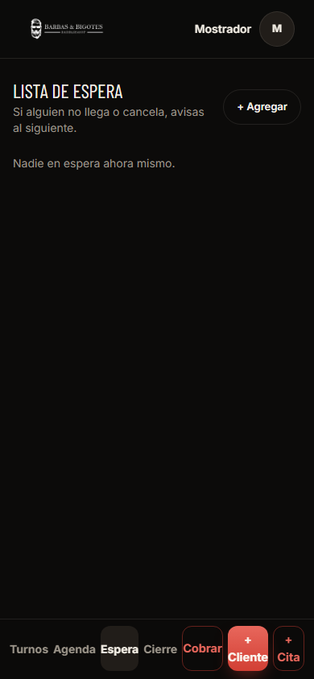
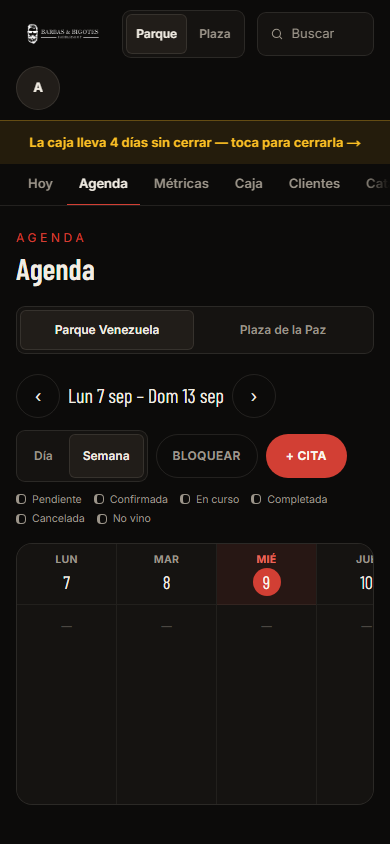
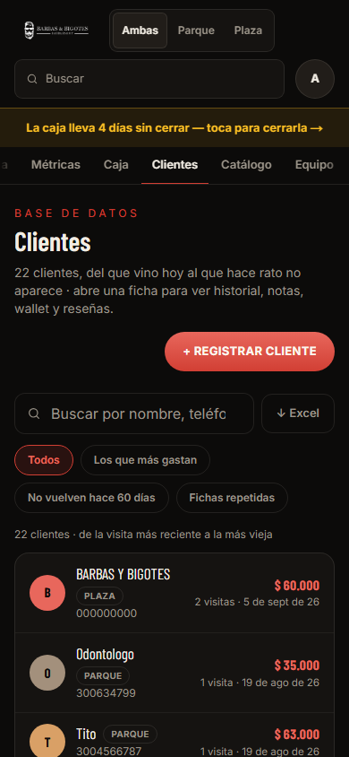
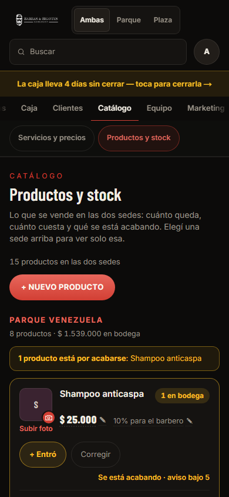
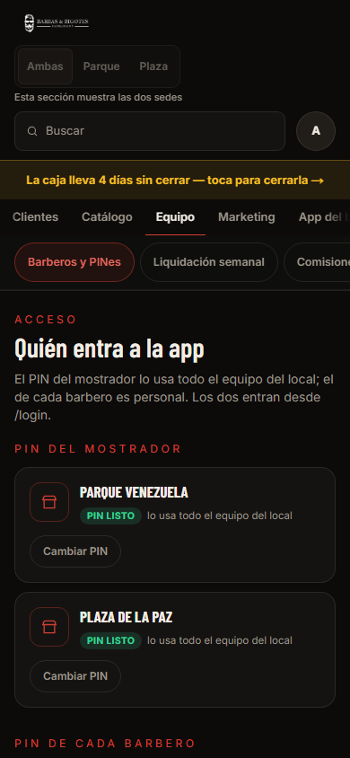
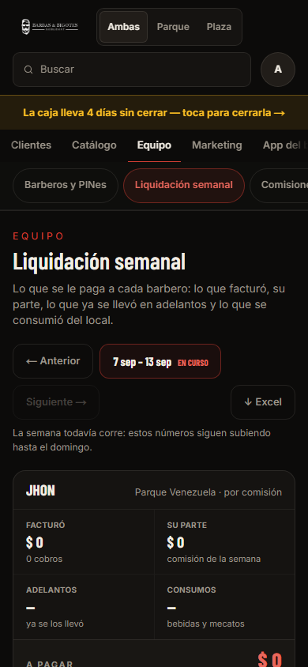
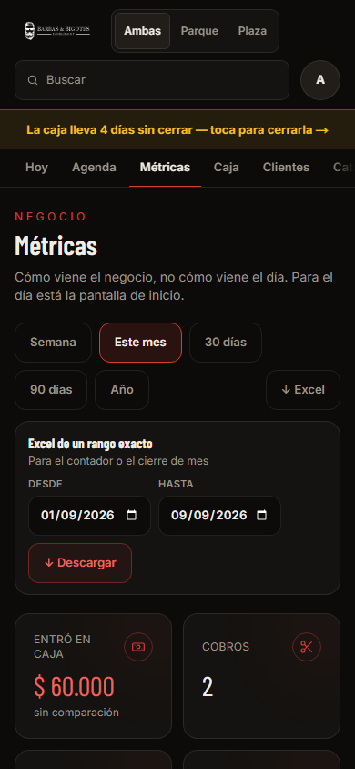
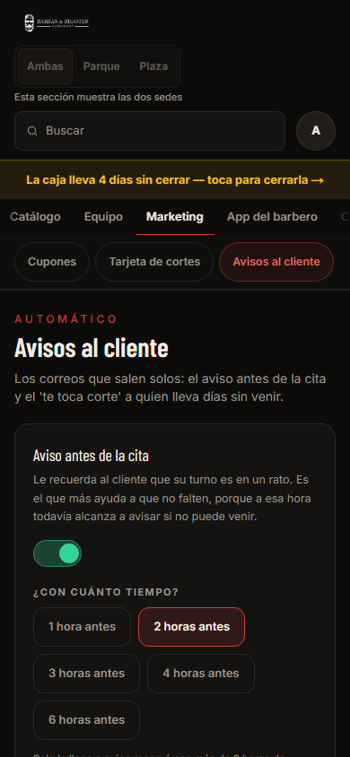
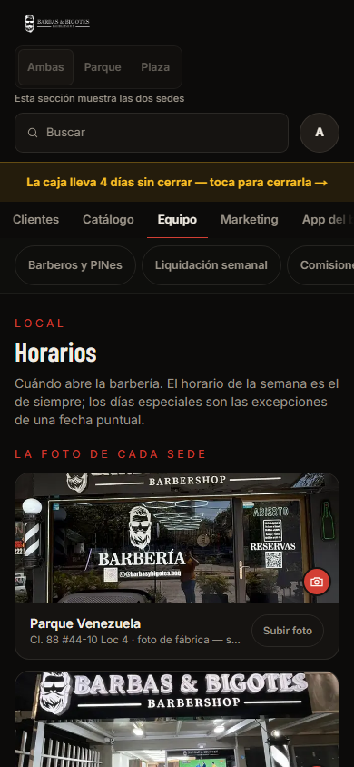
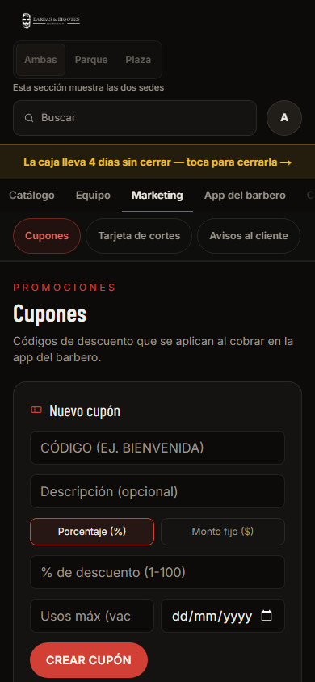
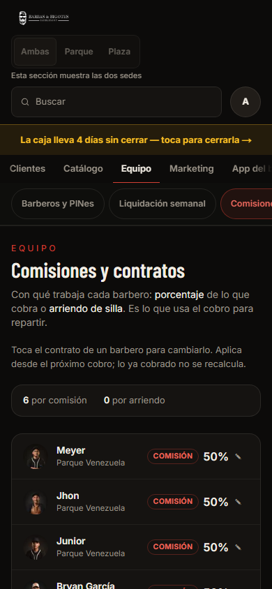
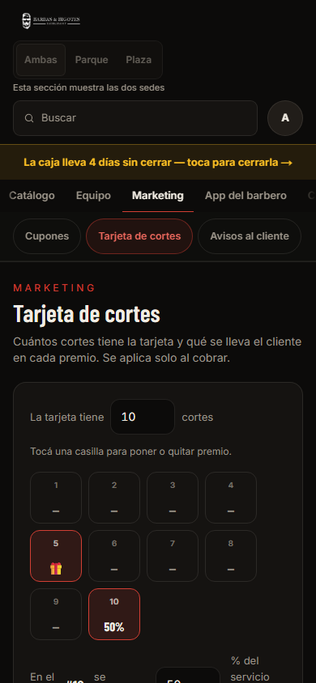
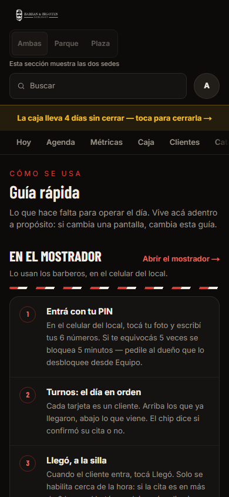
Preparado por Claude para FourG Solutions.